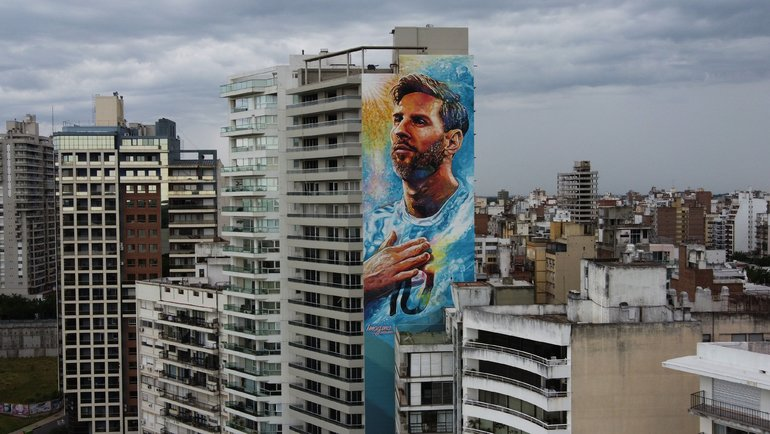

Удивительные теории и факты
Факт 1: Теория о "инопланетном" происхождении
Из-за невероятных способностей Месси, болельщики и журналисты часто шутят, что он "не с этой планеты". Сам Месси смеётся над этими теориями. Его низкий центр тяжести (рост 170 см), невероятный дриблинг и видение поля заставляют говорить о "сверхъестественных" способностях.
Факт 2: Рекорд по хет-трикам
Месси забил более 50 хет-триков за карьеру - это абсолютный рекорд! Только в Ла Лиге он оформил 36 хет-триков. Самый быстрый хет-трик он забил за 7 минут в матче против "Гранады" в 2016 году.
Факт 3: Теория заговора о "Золотом мяче"
Некоторые критики утверждают, что Месси получал "Золотые мячи" благодаря маркетингу "Барселоны" и дружбе с журналистами. Однако статистика говорит обратное: в годы его побед он объективно был лучшим по всем показателям - голы, передачи, титулы.
Факт 4: Месси никогда не получал красную карточку в сборной
За более чем 180 матчей за сборную Аргентины Месси ни разу не был удалён с поля! Это удивительный факт для игрока, который проводит столько времени с мячом в штрафной соперника и часто становится объектом грубой игры.
Факт 5: Он левша, но бьёт штрафные правой
Хотя Месси левша, он иногда бьёт штрафные удары правой ногой! Это сбивает с толку вратарей. Его коронный удар - низом в ближний угол левой - стал легендой.